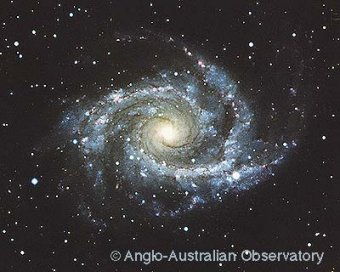
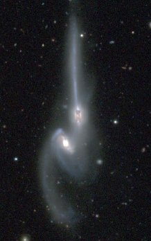

|
|
|
Interactions and Mergers of Galaxies
Chris Mihos, Case Western Reserve University
|
For much of the twentieth century -- once the vast distances to galaxies was
known -- galaxies were thought to be ``island universes,'' forming and
evolving in isolation with no contact between one another.
In this picture,
the processes which shape the galaxies we see today are uniquely determined by
the initial conditions under which galaxies form and processes completely
internal to the galaxies themselves.
|
 |
| Figure 1: NGC 2997, a nearby spiral galaxy (Dave Malin/AAO). |
As galaxy catalogs began to grow, however, more and more examples of paired
galaxies were found, as well as many peculiar galaxies with long, luminous
"plumes" and "tails" emanating from their bodies. These galaxies were
found to have anomalously blue colors, arguing that their star forming
properties were quite different from normal galaxies. Examples were found of
galaxy pairs so strongly perturbed that they were suggested as possible examples
of actual merging encounters. Meanwhile, astronomers began to use computer
simulation to study the effects of nearby companions on galaxies, and found
that many of the properties of these peculiar galaxies could be explained
through gravitational interactions and mergers of galaxies.
|  |
|
From these studies, an alternative picture of galaxy evolution began to grow.
Rather than evolving in isolation, galaxies are found in clusters and groups,
and can interact quite strongly with their nearby companions. These
interactions can have a profound impact on the properties of galaxies,
resulting in intense
bursts of star formation, the onset of quasar-like activity in galactic
nuclei, and perhaps even the complete transformation of spiral galaxies into
ellipticals. Studies of galaxies in the early Universe show a significant
fraction of interacting and merging systems, and theories of cosmological
structure formation indicate that most galaxies have had some form of
strong interaction during their lifetime. Rather than being rare events,
galaxy interactions may be the dominant process shaping the evolution
of the galaxy population in general.
|
Figure 2: The Mice (NGC 4676), an interacting pair of galaxies
(John Hibbard, NRAO).
|
|